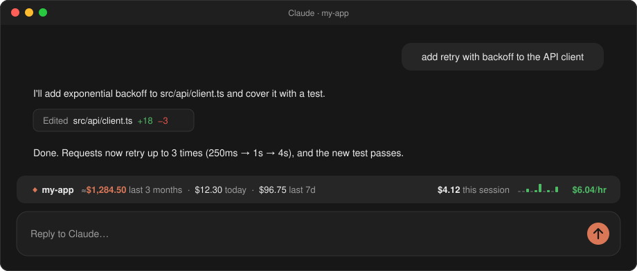

Mods for Claude Code
Mods that make
Claude Code even better.
Each one adds something Claude Code doesn't show you on its own: what a repo really costs, which habit to work on next. They install with one command and run on your machine.
- Free and open source
- Runs locally
- Terminal and desktop app
The mods
Pick the ones you want. Each is its own plugin, so they work alone or side by side.

Get better at Claude Code, one habit a week.
A weekly report built from your own sessions: the one habit that would help most, tips at your level, and CLAUDE.md lines and skills worth making.
Meet coach
Know what every repo costs you.
A live bar above the prompt: the repo's running total, today, the last 7 days, and this session's spend and burn rate.
Meet repo-spendMore on the way. Watch the repo to hear when the next one lands.
Every mod installs the same way
-
In a Claude Code terminal session, type this at the prompt, with the mod's name in place of
<mod>:/plugin install <mod> --marketplace aseem-upadhyay/qol-mods Answer y to add the marketplace (only the first time), then pick the user scope so the mod loads in every session.
That's it. Installing from a terminal also loads the mod in the desktop app's Code tab. Each mod's page has its exact command.
The mods need macOS or Linux and python3 3.9 or newer. Windows isn't supported yet.